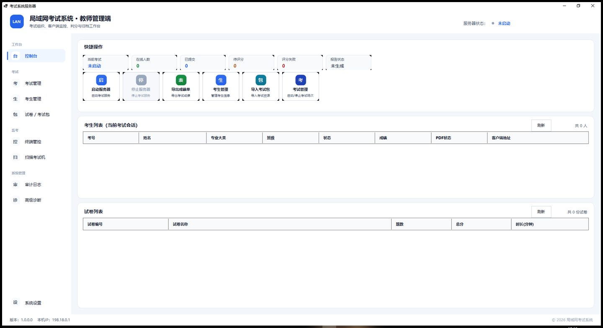

我把项目看作一条完整工程链路：从场景、需求和风险出发，完成架构、实现、测试、数据闭环与交付文档，而不只停留在功能演示。
查看 GitHub 上的公开项目
Clin · 项目管理 + 工具链全栈开发
把复杂系统，做成可靠且易用的产品。
关注桌面应用、人工智能、汽车软件与工程自动化，通过软件解决真实场景中的可靠性、效率和数据问题。
Software桌面应用与可靠系统
AI语音识别与数据质量
Automotive仿真、感知与控制
Automation测试、CI/CD 与工具链
About me
我是 Clin，关注项目管理与工具链全栈开发。
技术方向覆盖桌面应用、AI 语音、汽车软件与工程自动化；更在意需求如何落地、异常如何恢复，以及结果能否被验证。
真实环境优先
围绕终端、网络、硬件和部署边界做技术取舍。
数据可靠优先
把持久化、校验、回退与可追溯性放进正式链路。
验证闭环优先
用自动化测试、质量门禁与现场验收证明结果。
Featured projects
跨越软件、AI 与汽车工程的项目实践。
以下内容均来自现有代码、公开仓库或本地项目资料；未确认的指标和经历不作展示。
FEATURED CASE STUDY持续迭代
LanExamSystem
面向局域网考试场景的桌面系统，覆盖题库、组卷、定向发布、答题恢复、集中交卷、自动判分、报告与归档。
工程重点断网与重启恢复 · 服务端快照 · 持久化判分队列

Software · AI
Resonance Music
Flutter 跨平台音乐播放器，以本地优先的数据模型记录听歌行为，通过多标签、阈值与衰减机制生成可解释推荐。
工程重点多端自适应 · 合规音源 · 设备端推荐
AI · ASR
川渝智能导航方言 ASR
面向川渝导航语音的离线识别流水线，通过异常检测、受约束重试、模型回退与确定性后处理提升推理稳健性。
工程重点离线推理 · 分片恢复 · 质量门禁与审计
Automotive · Automation
CarMaker 端到端验证工具链
围绕 CarMaker 仿真构建 6 路视频回流采集、总线数据对齐、场景批量执行、CICD 自测与 KPI 输出链路。
工程重点多线程采集 · 数据转换 · 批量仿真闭环
Automotive · Robotics
ROS 2 Racecar
面向室外红蓝锥桶赛道的视觉循迹与安全控制项目，集成锥桶感知、PID 控制、任务状态机和失效安全机制。
工程重点感知置信度 · 安全停车 · Twist/PWM 适配
Skills & expertise
能力用工程场景组织，而不是用百分比包装。
每组技能都对应当前项目中实际使用或明确描述的技术方向。
Software Engineering
C/C++ 内存管理、多态、STL 与 C++11；C#/.NET 桌面应用；Python、MySQL、数据结构与算法。
AI / Data
方言语音识别、离线模型推理、文本规范化、数据处理、异常检测、质量门禁与可审计输出。
Automotive
IPG CarMaker 仿真流程、OpenDRIVE 数据处理、ROS 2、OpenCV、PID 控制，以及 Linux 下的 gcc/gdb 与 Shell。
Engineering
项目管理、系统设计、自动化测试、CI/CD、KPI 输出、性能分析、数据可靠性与技术文档。
Currently exploring
当前关注的工程问题。
从单个工具继续向可维护、可恢复、可量化的完整链路推进。
- 01可靠桌面系统
网络波动、状态恢复、数据一致性与部署边界。
- 02方言 ASR 质量工程
稳健推理、异常检测、可恢复分片与审计链路。
- 03汽车仿真与通信
场景数据、视频/总线回流、感知控制与安全机制。
- 04Developer Automation
用 CI/CD、测试和指标输出缩短验证反馈周期。
把工程决策写清楚。
技术写作区将用于整理架构、工具链、问题定位与验证方法。目前入口已建立，正式文章会在内容确认后发布。
进入 Technical Writing更多实验与持续开发。
公开仓库包含音乐播放器、智能车项目，以及持续完善的网站与工程实践。
访问 GitHubContact
交流项目、工具链或合作需求。
建议在信息中说明场景、当前问题、目标环境与期望结果。